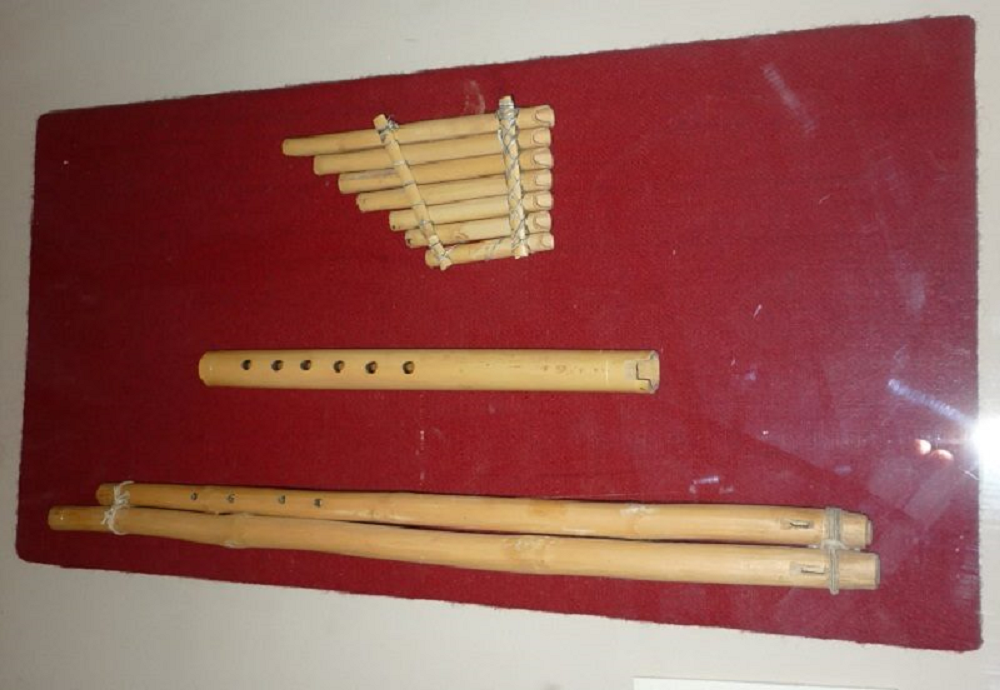

Gaita de Cajamarca
Apunte 018
Inicio > Blog Bitácora de un músico > Apunte 018
Asimetría en una flauta doble
La gaita de Cajamarca/Hualgayoc es una forma documentada de flauta doble peruana. Está hecha de madera de babillo y consta de dos tubos encolados de longitud desigual. El tubo más largo no tiene orificios de digitación. El más corto tiene cuatro orificios en la parte delantera y uno en la parte trasera.
Esa asimetría es la clave.
No se trata de una simple flauta duplicada. Los dos tubos no cumplen la misma función. Uno permite variación, mientras que el otro establece un sonido fijo. El instrumento se construye en torno a la relación entre estas dos funciones.
No es una gaita
El nombre "gaita" puede resultar engañoso. En este caso, no se refiere a una gaita, según el significado de la palabra en castellano estándar.
No tiene odre, ni presión de aire almacenada. Ambos tubos dependen directamente de la respiración del intérprete. Si el tubo más largo produce un sonido fijo, este no se mantiene mediante el mecanismo de una gaita tradicional. Se sostiene mediante el mismo soplo que activa el tubo digitado.
Por lo tanto, el instrumento pertenece a la lógica de las flautas dobles, no a la de las gaitas.
Dos tubos desiguales
Dado que el tubo más largo carece de orificios para los dedos, no puede articular una melodía de la misma manera que el tubo más corto. Su función es fija.
El tubo más corto proporciona la línea variable. Pero esta línea no se escucha sola, sino junto al sonido del tubo sin perforar.
El interés musical de la gaita reside en esta combinación desigual. El instrumento une movimiento y continuidad en un solo objeto.
Sonido fijo, sonido digitado
El tubo sin perforar no debe considerarse una flauta deficiente o incompleta. Su falta de orificios es la que le confiere su función.
Crea una referencia constante contra la cual se mueve el sonido del tubo digitado. El resultado no es armonía en el sentido occidental de los acordes. Es una relación más básica: un sonido en movimiento junto a uno fijo.
Esa relación cambia el significado de cada nota producida por el tubo digitado. La melodía nunca está completamente aislada. Siempre se escucha en relación con la otra columna de aire.
Una sola respiración
Ambos tubos son activados por un solo intérprete.
La relación entre el sonido fijo y el sonido digitado no se produce mediante dos músicos, ni mediante instrumentos separados que luego se combinan. Se produce a través de una sola respiración, dividida dentro de un mismo objeto.
El intérprete no se limita a tocar una melodía, sino que activa un sistema acoplado. La respiración une dos tubos desiguales en un solo evento musical.
¿Por qué es importante?
La gaita de Cajamarca es interesante precisamente porque la descripción disponible es breve pero estructuralmente densa.
No hay suficiente evidencia publicada sobre su repertorio, uso, afinación, ocasiones de interpretación o significados simbólicos. Pero la morfología ya es significativa. Dos tubos unidos, uno digitado y otro fijo, son suficientes para mostrar una lógica musical clara.
El instrumento hace que la relación sea material.
Se trata de una flauta doble construida no sobre la simetría, sino sobre la asimetría: un tubo se mueve, el otro permanece fijo, y ambos dependen del mismo soplo.
Lecturas
- Bolaños, César; Roel Pineda, Josafat; García, Fernando; and Salazar, Alida (1978). Mapa de los instrumentos musicales de uso popular en el Perú: clasificación y ubicación geográfica. Lima: Instituto Nacional de Cultura, Oficina de Música y Danza.
- Núñez, Moisés (1974). Instrumentos musicales de "Los gorriones de Bambamarca", de la provincia de Hualgayoc, dpto. de Cajamarca: quena doble, clarinete, gaita, antara, quena, bombo, tarola, maichil y triángulo. Entrevista. Texto mecanografiado. Lima: Instituto Nacional de Cultura, Oficina de Música y Danza.